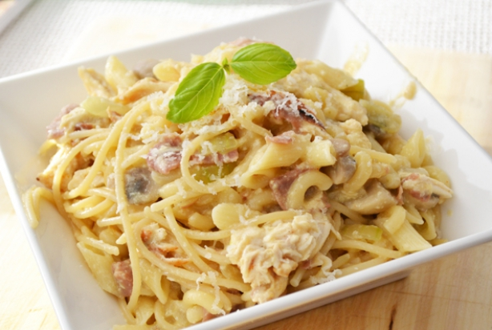

Recept Spaghetti Carbonara met Kip
Het gerecht is klassiek Italiaans, als het om Carbonara gaat. Het verschil is dat de pastasoort anders is.
Ook kan je dit recept met andere soorten pasta eten, volg dan de bereidingswijze op de verpakking.
Wat heb je nodig?
Dit gerecht is voor 2 personen
- 400 g Spaghetti
- 1 pakje bacon
- 1/2 bakje champignons
- 3 eieren
- 1 ui
- 1 kipfilet
- 1 teentje knoflook
- 250 ml kookroom(light)
- (Geraspte)Parmezaanse kaas
- Kipkruiden
- Klontje boter
- Olijfolie
- Peper/Zout
Bereidingswijze
- Kruid de kipfilet en bak de filet in een (grill)pan. Je kan de kip ook eerst koken en daarna kruiden.
- Doe wat boter in de hapjes pan en bak hierin de parmaham todat het verkleurd en knapperig is.
Kook ondertussen de spaghetti in gezouten water gaar.
- Voeg nu de ui, champignons en knoflook aan de pan met parmaham toe, en laat ongeveer 5 minuten bakken totdat de champignons bruin zijn.
- Meng de eieren en de room en breng eht op smaak met peper en zout. Giet de room over de hammix en zet het vuur op laag. Roer door tot het mengsel wat dikker begint te worden.
- Trek de gegaarde kipflilet uit elkaar met een vork en voeg de kip aan de saus toe, daarna goed doorroeren.
- Voeg de geraspte parmezaanse kaas toe en weer goed doorroeren, voeg daarna de pasta toe en zorg dat dit goed wordt vermengd.

Bron